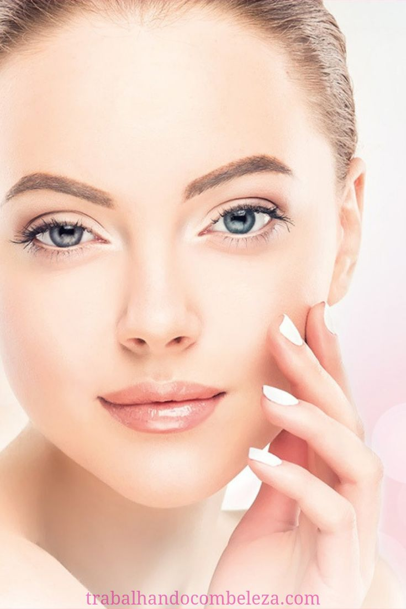
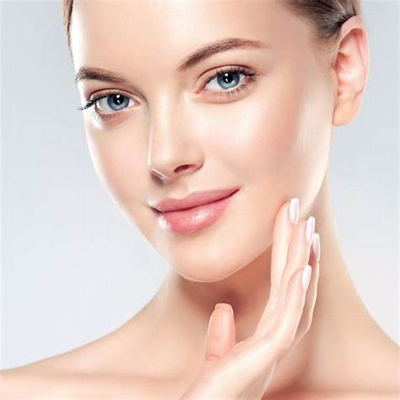
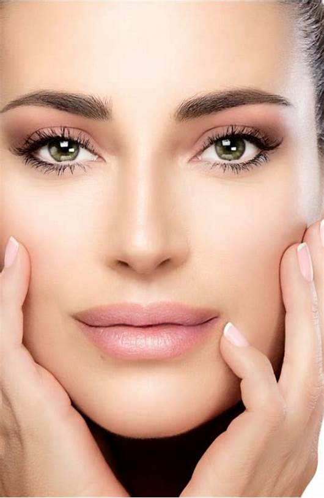

Estética


O profissional que trabalha com Estética Facial (esteticista) é um especialista em cuidados com rosto que proporciona manutenção da saúde, bem estar e beleza, através de técnicas, métodos e tratamentos para prevenir ou amenizar o envelhecimento precoce do rosto, a presença de manchas e rugas.
O tratamento estético facial propõe os cuidados necessários para que a imagem do cliente possa ser ajustada, melhorada e até destacada. Um ponto muito importante que o profissional deve entender é que essa imagem pessoal do cliente afeta seu senso de identidade.
HOF
A harmonização facial é conhecida como preenchimento com ácido hialurônico, essa substância é resposta em áreas estratégicas do rosto para preencher espaços e manter a pele sustentada. O maior benefício desse procedimento é deixar a face harmônica e simétrica, de forma que nas mulheres, geralmente é usada uma técnica que deixa o rosto triangular.
sérum?

Você sabe o que é sérum? Ou como usa-lo? Bom, esse produto é muito importante para hidratação, prevenção de rugas e clarear a pele. No entanto, é preciso conhecer quais os produtos mais indicados para sua rotina de saúde e beleza.
O sérum participa da rotina de milhares de pessoas que cuidam da pele diariamente, na verdade, é um produto é prático, com rápida absorção, fácil uso e textura extremamente leve na pele. Não tem porque exclui-lo da sua rotina skin care.